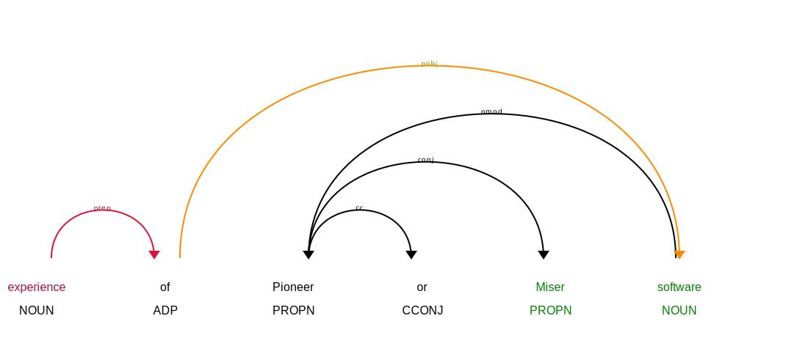
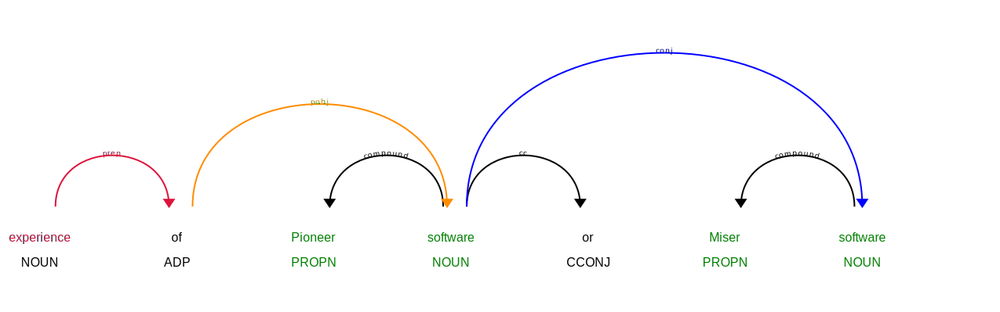

Extracting Skills from Job Ads: Part 3 Conjugations
I’m trying to extract skills from job ads, using job ads in the Adzuna Job Salary Predictions Kaggle Competition.
In the previous post I extracted skills written in phrases like “experience in telesales” using spaCy’s dependency parse, but it wouldn’t extract many types of experience from a job ad. Here we will extend these rules to extract lists of skills (for example extracting “telesales” and “callcentre” from “experience in telesales or receptionist”, which will let us analyse which experiences are related.
You can see the Jupyter notebook for the full analysis.
Expanding Conjugations
We can use spaCy’s dependency parse to extract conjugations

To extract the conjugations (blue lines in the diagram) of a term we look for children with a dependency conj, and then recursively look for conjugations in their children.
def get_conjugations(tok):
new = [tok]
while new:
tok = new.pop()
yield tok
for child in tok.children:
if child.dep_ == 'conj':
new.append(child)For each conjugation we want to extract the phrase (the green terms); a rough way to do this is to extract the longest sequence of nouns/adjectives left of the term.
def get_left_span(tok, label='', include=True):
offset = 1 if include else 0
idx = tok.i
while idx > tok.left_edge.i:
if tok.doc[idx - 1].pos_ in ('NOUN', 'PROPN', 'ADJ', 'X'):
idx -= 1
else:
break
return label, idx, tok.i+offsetThen we can modify our previous rule to handle conjugations by iterating over conjugations (the last 2 lines):
def extract_adp_conj_experience(doc):
for tok in doc:
if tok.lower_ == 'experience': # red text
for child in tok.rights:
if child.dep_ == 'prep': # red arrow
for obj in child.children:
if obj.dep_ == 'pobj': # orange arrow
for conj in get_conjugations(obj): # blue arrows
yield get_left_span(conj, label) # green textWhile this works pretty well for the phrase “experience of Pioneer or Miser software” it will only extract the term “Miser software”.

However if we rewrite the sentence to “experience of Pioneer software of Miser software” then it will extract both “Miser software” and “Pioneer software”.

This kind of pattern is pretty common (e.g. sales or service environment), and we would get better results if we could implement these rewrite rules but I haven’t tried to yet.
Analysing the results
This allows us to extract a list of skills like in the previous post, but now we can also look at which terms commonly co-occur to find related skills by ranking. For example the top related skills for “sales” are “customer service”, “marketing”, and “business development”. For common skills this works pretty well:
| Core Skill | Closest Skill | Second Closest Skill | Third Closest Skill |
|---|---|---|---|
| sales | customer service | marketing | business development |
| project management | design | delivery | development |
| SQL | Oracle | SAS | Java |
| manufacturing environment | aerospace industry | automotive industry | statistical process |
| planning | managing | delivering | management |
| testing | development | design | maintenance |
| marketing | sales | advertising | PR |
| analysis | design | development | reporting |
| Java | C++ | C | SQL |
| software development | .NET | commercial environment | different methodologies |
| customer service | sales | retail | hospitality |
| administration | configuration | maintenance | system design |
| CSS | HTML | JavaScript | PHP |
| recruitment | training | sales | sales environment |
| Excel | Word | PowerPoint | Outlook |
| SAP | Excel | Oracle | Hyperion |
| writing | editing | maintaining | reviewing |
| Windows | Linux | Active Directory | development |
| Python | Perl | Ruby | Java |
This is very informative, for example:
- if you want a career in marketing it’s useful to have sales skills, which are close to customer service skills, which are often found in retail and hospitality
- The backend programming languages (Java, C++, C) cluster together, separately from the frontend languages (CSS, HTML, JavaScript, PHP)
- Excel often ends up in a list of Windows Office technologies; but is especially useful for people who are using SAP
However for some skills noise terms start to occur, for example “teaching” is most closely related to “training”, “UK” and “years”. This is because we’re extracting skills in a very specific way, and so we’re missing many other ways skills could be encoded in the job ad. Another consequence of our extraction method is we get related skills that are phrased in the same way because they often occur together in a list, for example “planning”, “managing” and “delivering”. This is good because it mitigates there being multiple ways a skill could be written; admistration, administrating, admin, and Administration could all the same thing.
There’s a lot more we could do here to look at the network of related skills, or disambiguate broad skills like “design” based on their context, if we could retrieve more skills from a job ad. Unfortunately it rapidly becomes much more difficult to write rules to extract skills phrased in different ways. In particular this job ad data has had some formatting removed (like lists) that makes it even harder to use a rule based approach. In a follow up series we will investigate using the rule based extraction to help seed a predictive model to extract skills.